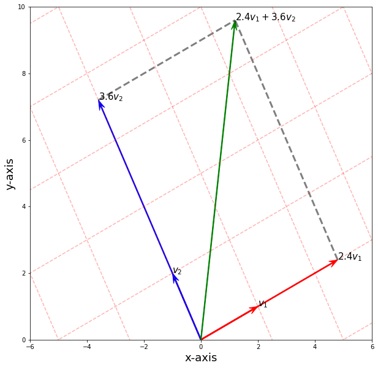

Basis and Dimension
- Basis
- Disclaimer
- Algebraic Definition (Basis)
- Minimal Generating Set
- Geometric Definition (Basis)
- Examples (Basis)
- Theorem (Criterion for Basis and Unique Representation of Basis)
- Theorem (All Basis has the same length)
- Dimensions
- Definition (Dimension)
- Notation (Dimension)
- Intuition (Dimension)
- Example (Dimension)
- Theorem (Dimension of a Subspace)
- Basis and Dimension Theorems and Applications
- Theorem (Spanning Set contains Basis)
- Theorem (Every Subspace has a Basis)
- Theorem (Linear Independent Sets can be extended to a Basis)
- Theorem (Equivalent Basis Definition)
- Useful Summary
- Applications of Basis
Basis
Disclaimer
I believe learning linear algebra needs some geometrical intuition, after looking around, I finally chanced upon this GitHub repo with nice python code to plot basis vectors. We will use his code below to visualize basis vectors in this section.
Please visit his repo here1.
Algebraic Definition (Basis)
A basis \(\B\) of a vector space \(V\) over a field \(\F\)2 is a linearly independent subset of \(V\) that spans \(V\). This means that a subset \(\B\) of \(V\) is a basis if it satisfies the two following conditions:
-
the linear independence property:
The set of vectors \(\b_1, \b_2, ..., \b_n \in V\) is linearly independent if and only if the only solution to the equation \(a_1\mathbf{v}_1 + a_2\mathbf{v}_2 + \cdots + a_m\mathbf{v}_n = \mathbf{0}\) is the trivial solution, the zero vector; and
-
the spanning property:
Define \(\B = \{\b_1, \b_2, ..., \b_m\}\) in \(V\), and the linear combination of all the vectors \(\b_1, \b_2, \cdots, \b_n\) make up the main vector space \(V\); i.e. \(\textbf{span}(B) = V\).
Minimal Generating Set
We won't go through the formal definition, but rather a motivating example from Math Stack Exchange3.
You can think about it as the idea from linear algebra of a basis for a space compared to a set of vectors which span the space.
A basis is a set of linearly independent elements, where removing one of the elements would result in it being unable to generate every element in that space.
In other words, you can think of a minimal generating set as a basis for the group, which has no redundant elements while a generating set may have redundant elements.
For example, to generate \(\mathbb R^3\) we have a basis \(\begin{bmatrix}1\\0\\0\end{bmatrix}, \begin{bmatrix}0\\1\\0\end{bmatrix}, \begin{bmatrix}0\\0\\1\end{bmatrix}\) (a minimal generating set), but this space is still generated by the set of vectors \(\begin{bmatrix}1\\0\\0\end{bmatrix}, \begin{bmatrix}0\\1\\0\end{bmatrix}, \begin{bmatrix}0\\0\\1\end{bmatrix}, \begin{bmatrix}0\\0\\3\end{bmatrix}\) (a generating set).
Geometric Definition (Basis)
Note
Geometric understanding of basis is best understood with examples!
Examples (Basis)
Examples (Standard Basis)
Every space \(\R^n\) has a standard basis.
is the standard basis for the \(\R^2\) space; and for \(\R^3\):
and we usually denote
and so on.
Visualize Standard Basis in 2D Space
Consider a vector \(\v = \begin{bmatrix}\color{red}3 \\ \color{red}6\end{bmatrix}\). We can construct this vector using our standard basis \(\e_1, \e_2\) as \(3\e_1 + 6\e_2\), as shown below.
import matplotlib.pyplot as plt
import numpy as np
fig, ax = plt.subplots(figsize=(10, 10))
arrows = np.array(
[
[[0, 0, 1, 0]],
[[0, 0, 0, 1]],
[[0, 0, 3, 0]],
[[0, 0, 0, 6]],
[[0, 0, 3, 6]],
]
)
colors = ["r", "b", "r", "b", "g"]
for i in range(arrows.shape[0]):
X, Y, U, V = zip(*arrows[i, :, :])
ax.arrow(
X[0],
Y[0],
U[0],
V[0],
color=colors[i],
width=0.03,
length_includes_head=True,
head_width=0.2, # default: 3*width
head_length=0.3,
overhang=0.4,
)
############################Dashed##################################
line1 = np.array([[3, 0], [3, 6]])
ax.plot(line1[:, 0], line1[:, 1], ls="--", lw=3, color="black", alpha=0.5)
line2 = np.array([[0, 6], [3, 6]])
ax.plot(line2[:, 0], line2[:, 1], ls="--", lw=3, color="black", alpha=0.5)
############################Text#####################################
ax.text(0, 1, "$e_2$", size=15)
ax.text(1, 0, "$e_1$", size=15)
ax.text(0, 6, "$6e_2$", size=15)
ax.text(3, 0, "$3e_1$", size=15)
ax.text(3, 6, "$3e_1+6e_2$", size=15)
###########################Grid Setting##############################
# Major ticks every 20, minor ticks every 5
major_ticks = np.arange(0, 10, 2)
minor_ticks = np.arange(0, 10, 0.5)
ax.set_xticks(major_ticks)
ax.set_xticks(minor_ticks, minor=True)
ax.set_yticks(major_ticks)
ax.set_yticks(minor_ticks, minor=True)
ax.grid(which="both")
ax.grid(which="minor", alpha=0.2)
ax.grid(which="major", alpha=0.5)
#######################################################################
ax.set_xlabel("x-axis", size=18)
ax.set_ylabel("y-axis", size=18)
ax.axis([-1, 10, -1, 10])
ax.grid()
plt.show()
Visualize Non-Standard Basis in 2D Space
We can also construct the same vector using different basis.
Next, consider \(\v_1 = \begin{bmatrix}2 \\ 1 \end{bmatrix}\) and \(\v_2 = \begin{bmatrix}-1 \\ 2 \end{bmatrix}\). We can verify indeed this is a basis for \(\mathbb{R}^2\). But the main point is that we can have the vector constructed by \(2.4\v_1 + 3.6\v_2\).
fig, ax = plt.subplots(figsize=(10, 10))
v1 = np.array([2, 1])
v2 = np.array([-1, 2])
v1m2 = 2.4 * v1
v2m3 = 3.6 * v2
arrows = np.array(
[
[[0, 0, v1[0], v1[1]]],
[[0, 0, v2[0], v2[1]]],
[[0, 0, 2.4 * v1[0], 2.4 * v1[1]]],
[[0, 0, 3.6 * v2[0], 3.6 * v2[1]]],
[[0, 0, (v1m2 + v2m3)[0], (v1m2 + v2m3)[1]]],
]
)
colors = ["r", "b", "r", "b", "g"]
for i in range(arrows.shape[0]):
X, Y, U, V = zip(*arrows[i, :, :])
ax.arrow(
X[0],
Y[0],
U[0],
V[0],
color=colors[i],
width=0.03,
length_includes_head=True,
head_width=0.2, # default: 3*width
head_length=0.3,
overhang=0.4,
)
# ############################ Dashed ##################################
point1 = [v2m3[0], v2m3[1]]
point2 = [v2m3[0] + v1m2[0], v2m3[1] + v1m2[1]]
line = np.array([point1, point2])
ax.plot(line[:, 0], line[:, 1], ls="--", lw=3, color="black", alpha=0.5)
point1 = [v1m2[0], v1m2[1]]
point2 = [v2m3[0] + v1m2[0], v2m3[1] + v1m2[1]]
line = np.array([point1, point2])
ax.plot(line[:, 0], line[:, 1], ls="--", lw=3, color="black", alpha=0.5)
############################Text#####################################
ax.text(2, 1, "$v_1$", size=15)
ax.text(-1, 2, "$v_2$", size=15)
ax.text(v1m2[0], v1m2[1], "$2.4v_1$", size=15)
ax.text(v2m3[0], v2m3[1], "$3.6v_2$", size=15)
ax.text(v1m2[0] + v2m3[0], v1m2[1] + v2m3[1], "$2.4v_1+3.6v_2$", size=15)
############################## Grid ###############################
t = np.linspace(-6, 6)
for k in range(-6, 7):
x = 2 * k - t
y = k + 2 * t
ax.plot(x, y, ls="--", color="red", alpha=0.3)
for k in range(-6, 7):
x = -k + 2 * t
y = 2 * k + t
ax.plot(x, y, ls="--", color="red", alpha=0.3)
#######################################################################
ax.set_xlabel("x-axis", size=18)
ax.set_ylabel("y-axis", size=18)
ax.axis([-6, 6, 0, 10]) # np.linalg.norm(v1m2+v2m3) is intercept
plt.show()

Visualize Standard Basis in 3D Space
The following shows geometrically, how standard basis in \(\R^3\) constructs a vector \(\begin{bmatrix}2 \\ 3 \\ 4 \end{bmatrix}\).
import utils
utils.linearCombo(2,3,4)
Visualize Non-Standard Basis in 3D Space
Next we show the linear combination of a non-standard basis, \((2,1,0), (0,3,1), (0,0,3)\).
a, b, c = 2, 3, 4
vec1 = np.array([2,1,0])
vec2 = np.array([0,3,1])
vec3 = np.array([1,2,3])
utils.linearComboNonStd(2,3,4, vec1, vec2, vec3)
Theorem (Criterion for Basis and Unique Representation of Basis)
Here we state another way of checking if a set \(\B \subseteq V\) is a basis of \(V\). One can ignore the third condition (out of scope!).
Let \(\B = \{\b_1, \cdots,\b_n\}\) and in particular \(\b_i \neq \0\). Let \(\B\) be a finite subset of a vector space \(V\) over a field \(\F\). Then the following are equivalent.
i) \(\B\) is a basis of \(V\)
\(\iff\)
ii) Unique expression condition: Every vector \(\v \in V\) can be expressed as
for some scalars \(a_i \in \F\) and such expression of \(\v\) is unique. That means whenever \(\v = b_1\b_1+ \cdots + b_n\b_n\) for some scalars \(b_i \in \F\), we have \(a_i = b_i\).
\(\iff\)
iii) \(V\) has the following direct sum decomposition:
Proof
To prove three equivalent statements, we can simply do a round-cycle proof: \(1 \implies 2 \implies 3 \implies 1\) will complete all \(\iff\) proofs.
\((1) \implies (2)\) \(B = \{\mathbf{v_{1}, \cdots, v_{n}}\}\) finite subset of \(V\).
Suppose \(\B\) is basis of \(V\). Then pick any \(\v \in V\) and suppose we can write \(\v\) in two ways.
Equations. (1) and (2) imply \((a_{1} - a_{1}^{'}) \v_{1} + \cdots (a_{n} - a_{n}^{'})\v_{n} = 0\) and since \(\B\) is L.I set, it only has trivial solutions. Hence \(a_{1} - a_{1}^{'} = 0\) \(\forall i\) implying \(a_{i} = a_{i}^{'}\). Hence \(\v\) has unique way of expressing.
\((2) \implies (3)\) Show first that \(V = \text{span}(\{\v_1\}) + \cdots \text{span}(\{\mathbf{v_{n}}\})\) .
\(\text{span}(\{\v_1\}) + \cdots \text{span}(\{\mathbf{v_{n}}\}) \subseteq V\) is obvious.
We show \(V \subseteq \text{span}(\{\v_1\}) + \cdots \text{span}(\{\mathbf{v_{n}}\})\). Let \(\v \in V\), by hypothesis,
Hence:
Now we show it is direct sum. Denote \(W_{i} = \text{span}(\{\mathbf{v_{i}}\})\). Suppose not, \(\exists x \in \sum\limits_{i=1}^{k-1}W_{i} \cap W_{k}\) for some \(2 \le k \le n\) and \(x \neq 0\). Then $ x = \mathbf{w_{1} + \cdots + w_{k-1}}$ for some \(\mathbf{w_{i}} \in W_{i}\) and \(x = -\mathbf{w_{k}}\) for some \(-\mathbf{w_{k}} \in W_{k}\). But since \(x\) is uniquely expressed. \begin{eqnarray} x & = & \w_1+\w_2+...+\w_{k-1} \ x & = & -\w_k \end{eqnarray} implying that
By uniqueness \(0 = 0 + 0 \cdots + 0\), but that would means \(\w_1=\w_2=...= \w_k =0\), implying \(x = 0\), a contradiction.
\((3) \implies (1)\) Want to show \(B\) is a basis of \(V\).
By hypothesis, \begin{eqnarray} V & = & \text{span}({\v_{1}}) + \cdots + \text{span}({\v_{n}})\nonumber\ & = & \text{span}({\v_{1}} \cup {\v_{2}} \cup \cdots \cup {\v_{n}}) \nonumber \ & = & \text{span}({\v_{1}, \v_{2}, \cdots, \v_{n}})\nonumber \end{eqnarray} Now we show \(B\) is L.I. That is \(a_{1}\v_{1} + \cdots + a_{n}\v_{n}\) has trivial solution.
Suppose not, say \(a_{k} \ne 0\), and such that \(\v_{k} = b_{1}\v_{1} + \cdots b_{k-1}\v_{k-1} + \cdots + b_{n}\v_{n}\) where \(b : = \frac{-a_{i}}{a_{k}}\). This is contradiction as \(\v_{k} \in W_{k}\) and \(b_{1}\v_{1} \cdots b_{n}\v_{n} \in \sum\limits_{i \ne k} W_{i}\).
Thus \(\v_{k} \in \sum\limits_{i \ne k}W_{i}\cap W_{k}\) and \(\v_{k} \ne 0\) is our assumption. This contradicts direct sum. Hence \(\B\) is LI.
Theorem (All Basis has the same length)
This theorem states that all basis of a vector space \(V\) has the same length. This theorem is important to faciliate the definition of Dimension.
Dimensions
We have encountered the term Dimension at the start of Vector Spaces. Now, we give it a formal definition.
Definition (Dimension)
If a vector space \(V\) has a basis \(\B\) with cardinality
then we say that \(V\) is finite dimensional and define the dimension
Otherwise, \(V\) is called infinite dimensional.
Note that we implicitly assumed that all basis \(\B\) has the same cardinality, which we showed as a theorem previously.
Notation (Dimension)
We denote the dimension of a finite vector space \(V\) to be
Intuition (Dimension)
One may wonder why the definition of Dimension depends on the basis. Why can't we just define the dimension of a vector space \(V\) over a field \(\F^n\) to be just the length of the element \(\v \in V\), which is just \(n\). This is a reasonable assumption, and both turns out to be equivalent.
That is, the length of any element \(\v \in V\) over a field \(\F^n\) is the same as the number of basis \(\B\) that a vector space \(V\) has.
We can easily think of it geometrically. Consider the 2d space \(\R^2\), we know that any element in \(\R^2\) must have 2 elements and in our earlier definition, the dimension of such a space is 2. Now we understood basis, and know that we need 2 linearly independent vectors to make up the 2d space. Same logic applies to the 3d space \(\R^3\).
Example (Dimension)
R2 and R3 Dimensions
i) Besides \(\{\mathbf{0}\}\) and \(\mathbb{R}^2\), all subspaces of \(\mathbb{R}^2\) are lines through the origin and they are of dimension \(1\). (Basis of the subspaces has only one vector)
ii) Besides \(\{\mathbf{0}\}\) and \(\mathbb{R}^3\), all subspaces of \(\mathbb{R}^3\) are either lines through the origin and they are of dimension \(1\) or planes containing the origin, which are of dimension \(2\). (Basis of the subspaces has only one vector or two vectors)
Theorem (Dimension of a Subspace)
If \(V\) is a finite dimensional vector space and \(U\) is a subspace of \(V\), then \(\dim(U) \leq \dim(V)\).
Proof
This should not even come as a surprise after the previous example. It also makes sense geometrically as a subspace \(U\), is also a subset of \(V\), and hence cannot "be larger" than its "parent".
Prove it and check pp.45 of linear algebra done right.
Basis and Dimension Theorems and Applications
Theorem (Spanning Set contains Basis)
A spanning set \(S\) (note we do not know if this is a basis or not yet) in vector space \(V\) necessarily contains the basis \(\B\).
Proof
First, intuitively we already know that the set \(S\) spans \(V\) and we acknowledge that a set \(S\) spanning the vector space \(V\) can be a linearly dependent set (refer to example (different sets can span the same vector space)). Therefore, we just need to "remove" the linearly dependent vectors in the set \(S\) so that the remaining set \(\B \subseteq S\) is both linearly independent and spans V, consequently, \(\B\) is a basis of \(V\).
Theorem (Every Subspace has a Basis)
Every finite subspace \(V\) has a basis \(\B\).
Proof
Every finite subspace can be represented by a span of a set of vectors. By Theorem (Spanning Set contains Basis), this spanning set has a basis.
Theorem (Linear Independent Sets can be extended to a Basis)
Let \(B\) be a Linearly Independent subset of a vector space \(V\) over a field \(\F\). Then exactly one of the following two cases is true.
i) \(B\) spans \(V\) and hence \(B\) is a basis of \(V\).
ii) Let \(\v \in V \setminus \text{Span}(B)\) and hence \(\v \not \in B\). Then \(B \cup \{\v\}\) is an Linearly Independent subset of \(V\).
iii) In particular, if \(V\) is of finite dimension \(n\), then one can find \(n - |B|\) vectors \(\mathbf{v_{|B|+1},...,v_n}\) in \(V \setminus \text{Span}(B)\) such that \(B \coprod \{\mathbf{v_{|B|+1},...,v_n} \}\) is a basis of \(V\).
Proof
Since \(B\) is L.I subset of \(V\), then \(B\) either spans \(V\) or do not span \(V\). If it spans \(V\), then \(B\) is a basis, which is point i).
If its doesn't span \(V\), take an element \(\w \in V \setminus \text{span}(B)\), \(\w \notin B\) and \(\mathbf{w} \notin \text{span}(B)\). Then it means \(\mathbf{w}\) is not a linear combination of any elements in \(B\).
Hence, \(B \cup \{\w\}\) is a L.I set as no elements in \(B \cup\{\w\}\) can be expressed as a LC of each other. Note if \(B = \{\v_{1}, \v_{2}, \cdots \v_{r}\}, ~ B\cup \{\w\} = \{\v_{1}, \cdots \v_{r}, \w\}\). $ \v_{i} \ne \w$.
For point 3, this means if \(B\) is LI in \(V\), then \(B\) can only have 2 cases.
-
If Case 1 occurs, we are done as $ n - |B| = n- n = 0$, we do not need any more vectors in \(V \setminus \text{span}(B)\) to union with \(B\).
-
If Case 2 occurs, Then let \(|B| = r\). then \(\exists \mathbf{w_{r+1}} \in V \setminus \text{span}(B)\) s.t \(B \cup \{\mathbf{w_{r+1}}\}\) is L.I set.
Applying the two cases to \(B \cup \{\mathbf{w_{r+1}}\}\), we will have \(B \cup \{\mathbf{w_{r+1}}\}\) be a basis or \(B \cup \{\mathbf{w_{r+1}, w_{r+2}}\}\) is another L.I set.
Since the dimension of \(V\) is \(n\). Then applying this expansion inductively, \(B \cup \{\mathbf{w_{r+1}, \cdots w_{n}}\}\) will eventually form a basis for \(V\). If for a contradiction the case 2 continues after \(\mathbf{w_{n}}\) then it contradicts the fact that a set with more than \(n\) vectors cannot be L.I.
Theorem (Equivalent Basis Definition)
Let \(B\) be a subset of a vector space \(V\) of finite dimension \(\text{dim}_{\F}V = n \geq 1\). Then the following are equivalent.
i) \(B\) is a basis of \(V\).
ii) \(B\) is \(L.I\) and \(|B| = n\).
iii) \(B\) spans \(V\) and \(|B| = n\).
Proof
We prove \(i \Leftrightarrow ii\) and \(i \Leftrightarrow iii\).
Now \(i \Rightarrow ii\) and \(i \Rightarrow iii\) are by definition.
iii \(\Rightarrow\) i
Since \(V = \text{Span}(B)\), there exists a subset \(B_1\) of \(B\) such that \(B_1\) is a basis of \(V\). But by our hypothesis, we have \(|B| = n\). Since \(B_1\) is basis of \(V\), we must have \(|B_1| =\) dimension of \(V\) which is \(n\). And hence \(|B_1| = |B|\). Since, \(B_1 \subseteq B\), and \(|B_1| = |B|\), we must have \(B_1 = B\) as a set. Hence \(B\) is a basis of \(V\).
Alternatively, suppose \(B\) is not a basis of \(V\). \(B\) is not linearly independent. Take a vector \(\v\) in \(B\) which is a linear combination of other vectors in \(B\). Then we know that \(B - \v\) still spans \(V\). But \(|B-\v| = n-1\) by our hypothesis. And it is a contradiction since it is a subset of \(V\) with less than \(n\) vectors, hence it cannot span \(V\). It is a contradiction.
ii \(\Rightarrow\) i
Suppose that \(B\) is not a basis of \(V\). Then \(B\) does not span \(V\). Pick a vector \(\v\) in \(V\) but not in Span\((B)\) (there exists such a vector because we say that \(B\) does not span \(V\)) and \(B \cup \{\v\}\) is still a linearly independent set given that \(B\) is a linearly independent set. Hence it is a contradiction because \(|B \cup \{\v\}| = n+1\) has more vectors than even the basis set, hence it cannot be linearly independent.
Useful Summary
Let \(V\) be a vector space which has a basis \(B\) with \(k\) vectors. Then
- any subset \(W\) of \(V\) with more than \(k\) vectors is always linearly dependent. So it means if any subset \(W\) of \(V\) is linearly independent, then \(W\) will have less or equals to \(k\) vectors, in which directly translates to the dimension of \(W\) is less or equals to the dimension of \(V\).
- Any subset \(W\) of \(V\) with less than \(k\) vectors cannot span \(V\). So for any subset \(W\) of \(V\) which spans \(V\), then it will have more or equals to \(k\) vectors. In particular, let \(W = \{\w_1,...,\w_k\}\) be a set of vectors in \(V = \mathbb{R}^n\). If \(k < n\), then \(S\) cannot span \(\mathbb{R}^n\).
- Suppose that \(C\) is another basis of \(V\), then \(|B|=|C|\).
Applications of Basis
Efficient Space Storage
Storing data efficiently in this era is very important. Let's give a superfluous example:
Let \(\A\) be a \(3 \times 100\) matrix where there are 3 features and 100 samples; and if we know that the columns of the matrix has a basis \(\B\), say
But we know that all 100 columns of \(\A\) can be reconstructed using the basis vectors; i.e. for each column \(\a_i\) of \(\A\), there exists constants \(\lambda_i\) such that
As a result, we can effectively store the 3 basis vectors (9 elements and note that the 3 basis vectors can be taken from the columns of \(\A\)); the remaining 7 columns we just need \(7 \times 3 = 21\) constants so that we can recover the columns using linear combination of the basis vectors. In total, we reduced the space from \(3 \times 100 = 300\) elements to \(3 \times 3 + 7 \times 3 = 30\) elements, effectively 70 percent decrease.
-
Such as the real numbers \(\R\) or the complex numbers \(\mathbb{C}\). ↩
-
https://math.stackexchange.com/questions/3089880/minimal-generating-set ↩